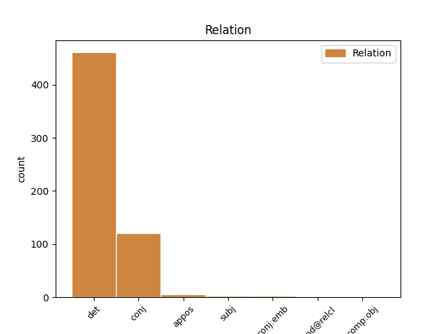
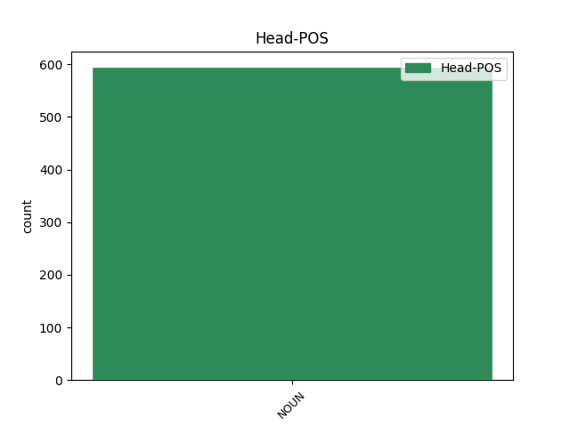
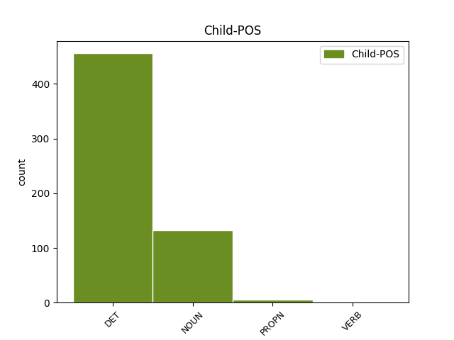

Distribution of features within this leaf



Agreement Rules sorted by frequency.
- When the dependent token is the determiner(det) of the head token, and the head token is NOUN and the dependent token is DET.
1 Viking _ _ _ _ 0 _ _ _
2 Penguin _ _ _ _ 0 _ _ _
3 , _ _ _ _ 0 _ _ _
4 2004 _ _ _ _ 0 _ _ _
5 , _ _ _ _ 0 _ _ _
6 p. _ _ _ _ 0 _ _ _
7 3 _ _ _ _ 0 _ _ _
8 . _ _ _ _ 0 _ _ _
9 Si _ _ _ _ 0 _ _ _
10 Hans _ _ _ _ 0 _ _ _
11 Luther _ _ _ _ 0 _ _ _
12 ay _ _ _ _ 0 _ _ _
13 maaimbisyoso _ _ _ _ 0 _ _ _
14 para _ _ _ _ 0 _ _ _
15 sa _ _ _ _ 0 _ _ _
16 kanyang _ _ _ _ 0 _ _ _
17 sarili _ _ _ _ 0 _ _ _
18 at _ _ _ _ 0 _ _ _
19 sa _ _ _ _ 0 _ _ _
20 kanyang kanyang DET _ Case=Nom|Gender=Fem|Gender[psor]=Masc,Neut|Number=Sing|Number[psor]=Sing|Person=3|Poss=Yes|PronType=Prs 21 det _ _
21 pamilya pamilya NOUN _ Gender=Fem|Number=Sing 0 _ _ _
22 at _ _ _ _ 0 _ _ _
23 siya _ _ _ _ 0 _ _ _
24 ay _ _ _ _ 0 _ _ _
25 determinado _ _ _ _ 0 _ _ _
26 na _ _ _ _ 0 _ _ _
27 makita _ _ _ _ 0 _ _ _
28 si _ _ _ _ 0 _ _ _
29 Martin _ _ _ _ 0 _ _ _
30 na _ _ _ _ 0 _ _ _
31 kanyang _ _ _ _ 0 _ _ _
32 panganay _ _ _ _ 0 _ _ _
33 na _ _ _ _ 0 _ _ _
34 lalake _ _ _ _ 0 _ _ _
35 na _ _ _ _ 0 _ _ _
36 maging _ _ _ _ 0 _ _ _
37 isang _ _ _ _ 0 _ _ _
38 abogado _ _ _ _ 0 _ _ _
39 . _ _ _ _ 0 _ _ _
1 Tumutulong _ _ _ _ 0 _ _ _
2 ito _ _ _ _ 0 _ _ _
3 sa _ _ _ _ 0 _ _ _
4 pagpapanatili pagpapanatili NOUN _ Definite=Ind|Gender=Neut|Number=Sing 0 _ _ _
5 ng _ _ _ _ 0 _ _ _
6 presyon _ _ _ _ 0 _ _ _
7 ng _ _ _ _ 0 _ _ _
8 dugo _ _ _ _ 0 _ _ _
9 at _ _ _ _ 0 _ _ _
10 pagkontrol pagkontrol NOUN _ Definite=Ind|Gender=Neut|Number=Sing 4 conj _ _
11 sa _ _ _ _ 0 _ _ _
12 mga _ _ _ _ 0 _ _ _
13 tungkulin _ _ _ _ 0 _ _ _
14 ng _ _ _ _ 0 _ _ _
15 puso _ _ _ _ 0 _ _ _
16 . _ _ _ _ 0 _ _ _
1 Pinakasentro _ _ _ _ 0 _ _ _
2 ng _ _ _ _ 0 _ _ _
3 mga _ _ _ _ 0 _ _ _
4 Radikal _ _ _ _ 0 _ _ _
5 na _ _ _ _ 0 _ _ _
6 repormang _ _ _ _ 0 _ _ _
7 kanyang _ _ _ _ 0 _ _ _
8 ipinatupad _ _ _ _ 0 _ _ _
9 ang _ _ _ _ 0 _ _ _
10 tinatawag _ _ _ _ 0 _ _ _
11 na _ _ _ _ 0 _ _ _
12 Perestroika _ _ _ _ 0 _ _ _
13 o _ _ _ _ 0 _ _ _
14 pagrereorganisa pagrereorganisa NOUN _ Definite=Ind|Gender=Neut|Number=Sing 0 _ _ _
15 o _ _ _ _ 0 _ _ _
16 pagrereestruktura pagrereestruktura NOUN _ Definite=Ind|Gender=Neut|Number=Sing 14 conj:emb _ _
17 . _ _ _ _ 0 _ _ _
1 Umalis _ _ _ _ 0 _ _ _
2 si _ _ _ _ 0 _ _ _
3 Padre _ _ _ _ 0 _ _ _
4 Salvi _ _ _ _ 0 _ _ _
5 Mula _ _ _ _ 0 _ _ _
6 sa _ _ _ _ 0 _ _ _
7 kaniyang kaniya NOUN _ Case=Gen|Gender=Fem|Number=Sing 8 det _ _
8 pinagtataguan pinagtataguan NOUN _ Case=Gen|Gender=Fem|Number=Sing 0 _ _ _
9 sa _ _ _ _ 0 _ _ _
10 may _ _ _ _ 0 _ _ _
11 haligi _ _ _ _ 0 _ _ _
12 . _ _ _ _ 0 _ _ _
1 Nagkataong _ _ _ _ 0 _ _ _
2 nasatabing _ _ _ _ 0 _ _ _
3 hospital hospital NOUN _ Case=NomAcc|Gender=Masc|Number=Sing 0 _ _ _
4 ( _ _ _ _ 0 _ _ _
5 Peter _ _ _ _ 0 _ _ _
6 Bent _ _ _ _ 0 _ _ _
7 Brigham _ _ _ _ 0 _ _ _
8 Hospital Hospital PROPN _ Case=NomAcc|Gender=Masc|Number=Sing 3 appos _ _
9 ) _ _ _ _ 0 _ _ _
10 and _ _ _ _ 0 _ _ _
11 dalubhasa _ _ _ _ 0 _ _ _
12 sa _ _ _ _ 0 _ _ _
13 rennin _ _ _ _ 0 _ _ _
14 na _ _ _ _ 0 _ _ _
15 si _ _ _ _ 0 _ _ _
16 Dr _ _ _ _ 0 _ _ _
17 . _ _ _ _ 0 _ _ _
1 Mga _ _ _ _ 0 _ _ _
2 argumento argumento NOUN _ Gender=Masc|Number=Sing 0 _ _ _
3 para _ _ _ _ 0 _ _ _
4 sa _ _ _ _ 0 _ _ _
5 pag _ _ _ _ 0 _ _ _
6 - _ _ _ _ 0 _ _ _
7 iral _ _ _ _ 0 _ _ _
8 ng _ _ _ _ 0 _ _ _
9 Diyos _ _ _ _ 0 _ _ _
10 * _ _ _ _ 0 _ _ _
11 Argumentong argumentong NOUN _ Gender=Masc|Number=Sing 2 appos _ _
12 kosmolohikal _ _ _ _ 0 _ _ _
13 - _ _ _ _ 0 _ _ _
14 Ang _ _ _ _ 0 _ _ _
15 argumentong _ _ _ _ 0 _ _ _
16 sa _ _ _ _ 0 _ _ _
17 tradisyonal _ _ _ _ 0 _ _ _
18 na _ _ _ _ 0 _ _ _
19 anyo _ _ _ _ 0 _ _ _
20 nito _ _ _ _ 0 _ _ _
21 ay _ _ _ _ 0 _ _ _
22 nakasalig _ _ _ _ 0 _ _ _
23 sa _ _ _ _ 0 _ _ _
24 pagpapalagay _ _ _ _ 0 _ _ _
25 na _ _ _ _ 0 _ _ _
26 ang _ _ _ _ 0 _ _ _
27 bawat _ _ _ _ 0 _ _ _
28 bagay _ _ _ _ 0 _ _ _
29 ay _ _ _ _ 0 _ _ _
30 may _ _ _ _ 0 _ _ _
31 sanhi _ _ _ _ 0 _ _ _
32 . _ _ _ _ 0 _ _ _
1 Sa _ _ _ _ 0 _ _ _
2 kanyang _ _ _ _ 0 _ _ _
3 pagbabalik _ _ _ _ 0 _ _ _
4 sa _ _ _ _ 0 _ _ _
5 bansa _ _ _ _ 0 _ _ _
6 , _ _ _ _ 0 _ _ _
7 dala _ _ _ _ 0 _ _ _
8 niya _ _ _ _ 0 _ _ _
9 ang _ _ _ _ 0 _ _ _
10 magndang magndang NOUN _ Definite=Ind|Gender=Neut|Number=Sing 0 _ _ _
11 balita balita NOUN _ Definite=Ind|Gender=Neut|Number=Plur 10 comp:obj _ _
12 na _ _ _ _ 0 _ _ _
13 nakita _ _ _ _ 0 _ _ _
14 na _ _ _ _ 0 _ _ _
15 niya _ _ _ _ 0 _ _ _
16 ang _ _ _ _ 0 _ _ _
17 taong _ _ _ _ 0 _ _ _
18 tunay _ _ _ _ 0 _ _ _
19 na _ _ _ _ 0 _ _ _
20 magmamahal _ _ _ _ 0 _ _ _
21 sa _ _ _ _ 0 _ _ _
22 kanya- _ _ _ _ 0 _ _ _
23 si _ _ _ _ 0 _ _ _
24 Philip _ _ _ _ 0 _ _ _
25 Peredo _ _ _ _ 0 _ _ _
26 . _ _ _ _ 0 _ _ _
1 Si _ _ _ _ 0 _ _ _
2 De _ _ _ _ 0 _ _ _
3 Coubertin _ _ _ _ 0 _ _ _
4 ay _ _ _ _ 0 _ _ _
5 nakilala _ _ _ _ 0 _ _ _
6 sa _ _ _ _ 0 _ _ _
7 pamamagitan _ _ _ _ 0 _ _ _
8 sa _ _ _ _ 0 _ _ _
9 kanyang _ _ _ _ 0 _ _ _
10 mga _ _ _ _ 0 _ _ _
11 pagdalaw _ _ _ _ 0 _ _ _
12 sa _ _ _ _ 0 _ _ _
13 mga _ _ _ _ 0 _ _ _
14 dalubhasaan dalubhasa NOUN _ Definite=Ind|Gender=Neut|Number=Plur 0 _ _ _
15 at _ _ _ _ 0 _ _ _
16 pamantasang _ _ _ _ 0 _ _ _
17 Britano britano PROPN _ Definite=Ind|Degree=Pos|Gender=Neut|Number=Sing 14 conj _ _
18 at _ _ _ _ 0 _ _ _
19 Amerikano _ _ _ _ 0 _ _ _
20 , _ _ _ _ 0 _ _ _
21 at _ _ _ _ 0 _ _ _
22 tinitiyak _ _ _ _ 0 _ _ _
23 upang _ _ _ _ 0 _ _ _
24 mapaunlad _ _ _ _ 0 _ _ _
25 ang _ _ _ _ 0 _ _ _
26 edukasyon _ _ _ _ 0 _ _ _
27 sa _ _ _ _ 0 _ _ _
28 Pransiya _ _ _ _ 0 _ _ _
29 . _ _ _ _ 0 _ _ _
1 Wagamama wagamama NOUN _ Case=Nom|Gender=Fem|Number=Sing 8 subj _ _
2 Fearī _ _ _ _ 0 _ _ _
3 Mirumo _ _ _ _ 0 _ _ _
4 de _ _ _ _ 0 _ _ _
5 Pon _ _ _ _ 0 _ _ _
6 ! _ _ _ _ 0 _ _ _
7 ) _ _ _ _ 0 _ _ _
8 base base NOUN _ Case=Nom|Gender=Fem|Number=Sing 0 _ _ _
9 sa _ _ _ _ 0 _ _ _
10 manga _ _ _ _ 0 _ _ _
11 Hiromu _ _ _ _ 0 _ _ _
12 Shinozuka _ _ _ _ 0 _ _ _
13 ng _ _ _ _ 0 _ _ _
14 Shogakukan _ _ _ _ 0 _ _ _
15 Ciao _ _ _ _ 0 _ _ _
16 magasin _ _ _ _ 0 _ _ _
17 . _ _ _ _ 0 _ _ _
Disagree Examples:
1 Ang _ _ _ _ 0 _ _ _
2 alinmang alinmang NOUN _ Case=NomAcc|Gender=Masc|Number=Sing 0 _ _ _
3 buwan _ _ _ _ 0 _ _ _
4 na _ _ _ _ 0 _ _ _
5 nagsisimula agsisimula VERB _ Case=NomAcc|Form=Ecl|Gender=Fem|Number=Sing 2 mod@relcl _ _
6 sa _ _ _ _ 0 _ _ _
7 Linggo _ _ _ _ 0 _ _ _
8 ay _ _ _ _ 0 _ _ _
9 mayroong _ _ _ _ 0 _ _ _
10 Biyernes _ _ _ _ 0 _ _ _
11 sa _ _ _ _ 0 _ _ _
12 ika-13 _ _ _ _ 0 _ _ _
13 araw _ _ _ _ 0 _ _ _
14 . _ _ _ _ 0 _ _ _
1 Ang _ _ _ _ 0 _ _ _
2 " _ _ _ _ 0 _ _ _
3 Crew _ _ _ _ 0 _ _ _
4 Love _ _ _ _ 0 _ _ _
5 " _ _ _ _ 0 _ _ _
6 na _ _ _ _ 0 _ _ _
7 kinanta _ _ _ _ 0 _ _ _
8 ni _ _ _ _ 0 _ _ _
9 Drake _ _ _ _ 0 _ _ _
10 sa _ _ _ _ 0 _ _ _
11 kanyang kanyang DET _ Gender=Masc|Number=Sing|Number[psor]=Sing|Person=3|Poss=Yes|PronType=Prs 12 det _ _
12 album album NOUN _ Definite=Ind|Gender=Neut|Number=Sing 0 _ _ _
13 na _ _ _ _ 0 _ _ _
14 Take _ _ _ _ 0 _ _ _
15 Care _ _ _ _ 0 _ _ _
16 . _ _ _ _ 0 _ _ _
1 Ang _ _ _ _ 0 _ _ _
2 form _ _ _ _ 0 _ _ _
3 na _ _ _ _ 0 _ _ _
4 ito _ _ _ _ 0 _ _ _
5 ay _ _ _ _ 0 _ _ _
6 din _ _ _ _ 0 _ _ _
7 embraced _ _ _ _ 0 _ _ _
8 sa _ _ _ _ 0 _ _ _
9 pamamagitan _ _ _ _ 0 _ _ _
10 ng _ _ _ _ 0 _ _ _
11 mga _ _ _ _ 0 _ _ _
12 batang _ _ _ _ 0 _ _ _
13 may _ _ _ _ 0 _ _ _
14 gulang _ _ _ _ 0 _ _ _
15 at _ _ _ _ 0 _ _ _
16 mas _ _ _ _ 0 _ _ _
17 matanda _ _ _ _ 0 _ _ _
18 Poets _ _ _ _ 0 _ _ _
19 para _ _ _ _ 0 _ _ _
20 sa _ _ _ _ 0 _ _ _
21 kanyang kanyang DET _ Gender=Masc|Number=Sing|Number[psor]=Sing|Person=3|Poss=Yes|PronType=Prs 22 det _ _
22 pagpapakilala pagpapakilala NOUN _ Definite=Ind|Gender=Neut|Number=Sing 0 _ _ _
23 simple _ _ _ _ 0 _ _ _
24 . _ _ _ _ 0 _ _ _
1 Ang _ _ _ _ 0 _ _ _
2 Full _ _ _ _ 0 _ _ _
3 House _ _ _ _ 0 _ _ _
4 ay _ _ _ _ 0 _ _ _
5 isang isang DET _ Definite=Ind|Gender=Masc|Number=Sing|PronType=Art 6 det _ _
6 drama drama NOUN _ Definite=Ind|Gender=Neut|Number=Sing 0 _ _ _
7 sa _ _ _ _ 0 _ _ _
8 Pilipinas _ _ _ _ 0 _ _ _
9 . _ _ _ _ 0 _ _ _
1 Ang _ _ _ _ 0 _ _ _
2 Hindi _ _ _ _ 0 _ _ _
3 - _ _ _ _ 0 _ _ _
4 sarili _ _ _ _ 0 _ _ _
5 ( _ _ _ _ 0 _ _ _
6 Pāli _ _ _ _ 0 _ _ _
7 : _ _ _ _ 0 _ _ _
8 anatta anatta NOUN _ Case=Nom|Gender=Fem|Number=Sing|Shared=Yes 0 _ _ _
9 ; _ _ _ _ 0 _ _ _
10 Sanskrit _ _ _ _ 0 _ _ _
11 : _ _ _ _ 0 _ _ _
12 anātman anātman NOUN _ Case=Nom|Gender=Masc|Number=Sing 8 conj _ _
13 ) _ _ _ _ 0 _ _ _
14 ang _ _ _ _ 0 _ _ _
15 ikatlong _ _ _ _ 0 _ _ _
16 marka _ _ _ _ 0 _ _ _
17 ng _ _ _ _ 0 _ _ _
18 pag _ _ _ _ 0 _ _ _
19 - _ _ _ _ 0 _ _ _
20 iral _ _ _ _ 0 _ _ _
21 . _ _ _ _ 0 _ _ _